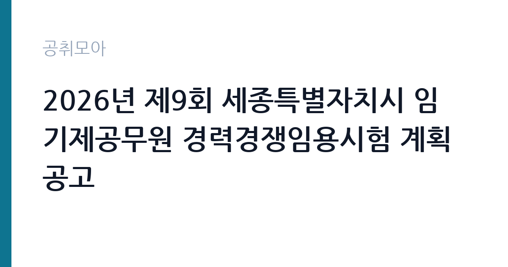

[지자체] 2026년 제9회 세종특별자치시 임기제공무원 경력경쟁임용시험 계획 공고
세종특별자치시 · 세종 · 마감 2026-10-28 (D-17) · 출처 나라일터

한눈에 보는 모집 조건
| 기관 | 세종특별자치시 |
|---|---|
| 공고명 | 2026년 제9회 세종특별자치시 임기제공무원 경력경쟁임용시험 계획 공고 |
| 고용형태 | 임기제 |
| 근무지 | 세종 |
| 게시일 | 2026-10-12 |
| 마감일 | 2026-10-28 (D-17) |
지원자격, 이렇게 읽으세요
- 지방시간선택제임기제 마급 2명
- 접수 ~2026-10-28 마감
- 세부 조건은 원문 공고문 확인
모집 직급은 마급으로, 9급 상당의 실무 직급입니다. 시간선택제임기제는 주 15시간부터 35시간까지 범위에서 근무시간을 선택하는 형태로, 선택한 시간에 비례해 보수가 지급됩니다. 응시자는 모집분야의 관련 학위나 자격증, 실무경력 중 공고문이 정한 요건을 갖춰야 하며, 지방공무원법상 임용 결격사유에 해당하지 않아야 합니다. 모집분야와 근무부서, 세부 응시자격은 반드시 원문 공고문에서 확인하셔야 합니다.
이 공고의 포인트
이 공고의 포인트는 시간선택제라는 근무형태 그 자체입니다. 전일제 근무가 어려운 경력자도 공직 경험을 쌓을 수 있고, 임기제 특유의 전문 직무에서 실무 감각을 유지할 수 있습니다. 세종시는 중앙행정기관이 밀집한 행정수도로, 시청 근무를 통해 행정 네트워크를 넓히기에도 좋은 위치입니다. 선발 인원이 2명으로 적으니 모집분야 적합도를 서류에서 선명하게 보여주는 전략이 필요합니다.
전형은 어떻게 진행되나
임기제공무원 경력경쟁임용은 서류전형과 면접시험으로 진행되는 것이 일반적입니다. 서류전형에서 응시자격과 직무 적합성을 심사하고, 면접시험에서 전문지식과 공직 적합성을 평가합니다. 합격자는 임용예정 직위에 임기제로 임용되며, 근무실적에 따라 계약 연장이 가능합니다. 단계별 일정과 제출서류 목록은 원문 공고문에서 확인하십시오.
원문에서 확인한 전형 방식
세종특별자치시인사위원회 공고 제2026-58호 2026년 제9회 세종특별자치시 임기제공무원 경력경쟁임용시험 계획을 다음과 같이 공고하오니 전문지식과 경력을 갖춘 유능한 인재들의 많은 응시 바랍니다. 2026년 10월 12일 세종특별자치시인사위원회위원장
이런 분께 추천해요
- 모집분야 실무경력을 갖춘 분으로, 전일제보다 유연한 근무형태를 원하는 분입니다. 육아나 학업, 겸업 사정이 있는 경력자에게 맞는 자리입니다.
- 세종시와 중앙부처 인근에서 행정 경험을 쌓고 싶은 분입니다. 시청 근무 경력은 이후 공직과 공공기관 지원에서도 자산이 됩니다.
- 정년이 아닌 계약직이어도 전문 직무에서 즉시 기여할 수 있는 분입니다. 임기 동안의 성과를 포트폴리오로 남기겠다는 계획이 있다면 잘 맞습니다.
지원 전 체크리스트
- 모집분야와 근무부서, 주당 근무시간과 계약기간을 원문 공고문에서 확인하셨습니까.
- 응시자격에 필요한 경력증명서와 자격증 사본을 접수 마감 전에 준비하셨습니까.
- 시간선택제 근무시간과 그에 따른 보수 수준을 이해하고 지원하셨습니까.
- 접수 마감일인 10월 28일 전에 서류 제출을 마치실 수 있습니까.
모집 일정과 제출 타이밍
공고 게시일은 2026년 10월 12일이며 접수 마감은 10월 28일입니다. 약 2주의 접수 기간이 있으나 추석 연휴와 겹칠 수 있는 시기이므로, 경력증명서 발급처럼 외부 기관이 필요한 서류는 공고 직후 바로 신청하시기를 권합니다. 면접 일정은 서류 합격자 발표와 함께 안내됩니다.
직무 이해하기: 지자체
지방시간선택제임기제는 특정 전문 분야에서 일정 기간 근무하는 계약직 지방공무원입니다. 마급은 실무 집행과 현장 지원 업무를 맡는 직급으로, 근무부서의 사업 운영과 민원 응대, 자료 조사와 보고서 작성 같은 실무를 담당합니다. 시간선택제는 선택한 근무시간만큼 업무 범위와 책임이 조정되므로, 짧은 시간에 핵심 업무를 처리하는 효율성이 중요합니다.
자기소개서 작성 팁
임기제 자기소개서는 해당 직무와의 직접 연결이 생명입니다. 모집분야 경력 중 공고 직무와 겹치는 경험을 앞에 배치하고, 입직 후 1년 안에 낼 수 있는 성과를 구체적으로 제시하십시오. 시간선택제를 선택한 이유를 소극적 사정이 아니라 업무 집중도와 성과로 풀어내는 문장이 면접관의 신뢰를 얻습니다.
면접 준비 포인트
면접에서는 지원 분야 전문지식과 세종시정에 대한 이해, 시간선택제 근무자로서의 업무 계획을 묻습니다. 해당 부서의 최근 보도자료와 시정 현안을 미리 읽어두시고, 짧은 근무시간 안에 성과를 내는 본인만의 업무 방식을 설명할 수 있게 준비하십시오.
급여·근무조건 읽는 법
지방시간선택제임기제의 보수는 전일제 근무 시 지급받을 봉급월액을 기준으로 선택한 근무시간에 비례해 지급됩니다. 마급은 9급 상당 직급으로, 기본연봉에 성과연봉이 더해지는 연봉제 구조이며, 구체적인 연봉 상한액과 하한액은 지방공무원 보수규정 별표와 해당 공고문의 보수 조건표에서 확인하셔야 합니다. 시간외근무수당과 연가보상비 등 수당 지급 기준도 원문에서 대조하십시오.
자주 묻는 질문
- 시간선택제는 주 몇 시간 근무합니까?
주당 15시간부터 35시간까지 범위에서 공고문이 정한 시간 중 선택합니다. 선택한 시간에 비례해 보수가 지급되며, 정확한 근무시간은 해당 공고의 모집분야별 조건에서 확인하십시오. - 임기제는 정년이 보장됩니까?
임기제공무원은 계약기간 동안 근무하는 신분으로 정년이 보장되지 않습니다. 다만 근무실적에 따라 계약 연장이 가능하며, 관련 경력은 이후 공무원과 공공기관 지원에서 인정받을 수 있습니다. - 세종시 거주 요건이 있습니까?
지방공무원 채용에는 거주지 제한이나 가점이 붙는 경우가 있으므로, 해당 공고문의 응시자격에서 거주 요건 항목을 반드시 확인하십시오.
함께 보면 좋은 공고
[지자체] 2026년 인천시립박물관 유물관리부 기간제근로자(기증유물) 추가채용 — 마감 2026-10-11[지자체] 충주시 청원경찰 임용시험 시행계획 공고 — 마감 2026-10-21[지자체] 2026년 제5회 및 제6회 완주군 임기제공무원 채용시험 시행계획 공고 — 마감 2026-10-21출처: 나라일터 공개정보를 바탕으로 공취모아가 정리한 안내글입니다. 모집 조건·일정은 변경될 수 있으니 지원 전 반드시 원문 공고문을 확인하세요. 본 글은 정보 제공용이며 합격을 보장하지 않습니다.